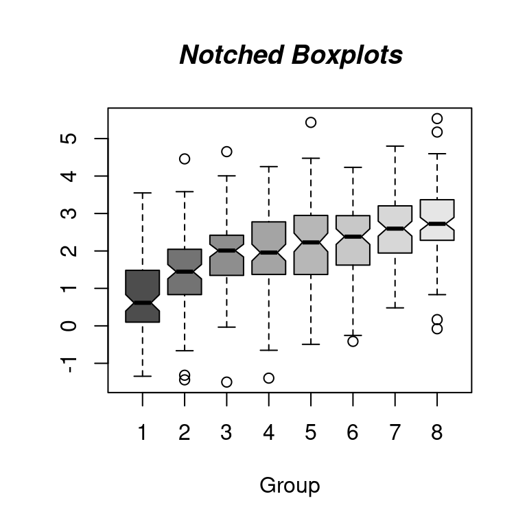

10.2 基础统计图形
按图的类型划分，最后在小结部分给出各图适用的数据类型
根据数据类型划分： 对于一元数据，可用什么图来描述；多元数据呢，连续数据和离散数据（分类数据）
先找一个不重不漏的划分，指导原则是根据数据类型选择图，根据探索到的数据中的规律，选择图
其它 assocplot fourfoldplot sunflowerplot
10.2.1 条形图
简单条形图
data(diamonds, package = "ggplot2") # 加载数据
par(mar = c(2, 5, 1, 1))
barCenters <- barplot(table(diamonds$cut),
col = "lightblue", axes = FALSE,
axisnames = FALSE, horiz = TRUE, border = "white"
)
text(
y = barCenters, x = par("usr")[3],
adj = 1, labels = names(table(diamonds$cut)), xpd = TRUE
)
axis(1,
labels = seq(0, 25000, by = 5000), at = seq(0, 25000, by = 5000),
las = 1, col = "gray"
)
grid()
图 10.38: 条形图
简单柱形图
set.seed(123456)
barPois <- table(stats::rpois(1000, lambda = 5))
plot(barPois, col = "lightblue", type = "h", lwd = 10, main = "")
box(col = "gray")
图 10.39: 柱形图
复合条形图
par(mar = c(4.1, 2.1, 0.5, 4.5))
barplot(VADeaths,
border = "white", horiz = FALSE, col = hcl.colors(5),
legend.text = rownames(VADeaths), xpd = TRUE, beside = TRUE,
cex.names = 0.9,
args.legend = list(
x = "right", border = "white", title = "Age",
box.col = NA, horiz = FALSE, inset = c(-.2, 0),
xpd = TRUE
),
panel.first = grid(nx = 0, ny = 7)
)
图 10.40: 复合条形图
堆积条形图
par(mar = c(4.1, 2.1, 0.5, 4.5))
barplot(VADeaths,
border = "white", horiz = FALSE, col = hcl.colors(5),
legend.text = rownames(VADeaths), xpd = TRUE, beside = FALSE,
cex.names = 0.9,
args.legend = list(
x = "right", border = "white", title = "Age",
box.col = NA, horiz = FALSE, inset = c(-.2, 0),
xpd = TRUE
),
panel.first = grid(nx = 0, ny = 4)
)
图 10.41: 堆积条形图
- 堆积条形图 spineplot
简单条形图
barplot(
data = BOD, demand ~ Time, ylim = c(0, 20),
border = "white", horiz = FALSE, col = hcl.colors(1)
)
pg_mean <- aggregate(weight ~ group, data = PlantGrowth, mean)
barplot(
data = pg_mean, weight ~ group,
border = "white", horiz = FALSE, col = hcl.colors(3)
)
Titanic 数据集是 table 数据类型
简单条形图
复合条形图
barplot(Freq ~ Class + Survived,
data = Titanic,
subset = Age == "Adult" & Sex == "Male",
beside = TRUE,
border = "white", horiz = FALSE, col = hcl.colors(4),
args.legend = list(
border = "white", title = "Class",
box.col = NA, horiz = FALSE,
xpd = TRUE
),
ylab = "# {passengers}", legend = TRUE
)
堆积条形图
barplot(Freq ~ Class + Survived,
data = Titanic,
subset = Age == "Adult" & Sex == "Male",
border = "white", horiz = FALSE, col = hcl.colors(4),
args.legend = list(
border = "white", title = "Class",
box.col = NA, horiz = FALSE,
xpd = TRUE
),
ylab = "# {passengers}", legend = TRUE
)
10.2.2 直方图
set.seed(1234)
n <- 2^24
x <- runif(n, 0, 1)
delta <- 0.01
len <- diff(c(0, which(x < delta), n + 1)) - 1
ylim <- seq(0, 1800, by = 300)
xlim <- seq(0, 100, by = 20)
p <- hist(len[len < 101], breaks = -1:100 + 0.5, plot = FALSE)
plot(p, ann = FALSE, axes = FALSE, col = "lightblue", border = "white", main = "")
axis(1, labels = xlim, at = xlim, las = 1) # x 轴
axis(2, labels = ylim, at = ylim, las = 0) # y 轴
box(col = "gray")
图 10.42: 直方图
with(faithful, plot(eruptions ~ waiting, pch = 16))
with(faithful, hist(waiting,
main = "Time between Old Faithful eruptions",
xlab = "Minutes", ylab = "",
cex.main = 1.5, cex.lab = 1.5, cex.axis = 1.4
))
with(data = faithful, {
hist(eruptions, seq(1.6, 5.2, 0.2),
prob = TRUE,
main = "", col = "lightblue", border = "white"
)
lines(density(eruptions, bw = 0.1), col = "#EA4335")
rug(eruptions, col = "#EA4335") # 添加数据点
})
图 10.43: 老忠实泉间歇性喷水的时间间隔分布
hist(longley$Unemployed,
probability = TRUE,
col = "light blue", main = ""
)
# 添加密度估计
lines(density(longley$Unemployed),
col = "red",
lwd = 3
)
图 10.44: 概率密度分布
直方图有很多花样的，添加阴影线，angle 控制倾斜的角度
# hist(longley$Unemployed, density = 1, angle = 45)
# hist(longley$Unemployed, density = 3, angle = 15)
# hist(longley$Unemployed, density = 1, angle = 15)
hist(longley$Unemployed, density = 3, angle = 45, main = "")
图 10.45: density 数值越大阴影线越密
10.2.3 密度图
data(galaxies, package = "MASS")
galaxies <- galaxies / 1000
# Bandwidth Selection by Pilot Estimation of Derivatives
c(MASS::width.SJ(galaxies, method = "dpi"), MASS::width.SJ(galaxies))## [1] 3.256151 2.566423plot(
x = c(5, 40), y = c(0, 0.2), type = "n", bty = "l",
xlab = "velocity of galaxy (km/s)", ylab = "density"
)
rug(galaxies)
lines(density(galaxies, width = 3.25, n = 200), col = "blue", lty = 1)
lines(density(galaxies, width = 2.56, n = 200), col = "red", lty = 3)
x <- seq(from = 100, to = 174, by = 0.5)
y1 <- dnorm(x, mean = 145, sd = 9)
y2 <- dnorm(x, mean = 128, sd = 8)
plot(x, y1,
type = "l", lwd = 2, col = "firebrick3",
main = "Systolic Blood Pressure Before and After Treatment",
xlab = "Systolic Blood Pressure (mmHg)",
ylab = "Frequency", yaxt = "n",
xlim = c(100, 175), ylim = c(0, 0.05)
)
lines(x, y2, col = "dodgerblue4")
polygon(c(117, x, 175), c(0, y2, 0),
col = "dodgerblue4",
border = "white"
)
polygon(c(100, x, 175), c(0, y1, 0),
col = "firebrick3",
border = "white"
)
axis(2,
at = seq(from = 0, to = 0.05, length.out = 8),
labels = seq(from = 0, to = 175, by = 25), las = 1
)
text(x = 100, y = 0.0445, "Pre-Treatment BP", col = "dodgerblue4", cex = 0.9, pos = 4)
text(x = 100, y = 0.0395, "Post-Treatment BP", col = "firebrick3", cex = 0.9, pos = 4)
points(100, 0.0445, pch = 15, col = "dodgerblue4")
points(100, 0.0395, pch = 15, col = "firebrick3")
abline(v = c(145, 128), lwd = 2, lty = 2, col = 'gray')
days <- abs(rnorm(1000, 80, 125))
plot(density(days, from = 0),
main = "Density plot",
xlab = "Number of days since trial started"
)
plot(density(days, from = 0, to = 180, adjust = 0.2),
main = "Density plot - Up to 180 days (86% of data)",
xlab = "Number of days since trial started"
)
library(survival)
surv.days <- Surv(days)
surv.fit <- survfit(surv.days ~ 1)
plot(surv.fit,
main = "Kaplan-Meier estimate with 95% confidence bounds (86% of data)",
xlab = "Days since trial started",
xlim = c(0, 180),
ylab = "Survival function"
)
grid(20, 10, lwd = 2)
10.2.4 经验图
with(data = faithful, {
long <- eruptions[eruptions > 3]
plot(ecdf(long), do.points = FALSE, verticals = TRUE, main = "")
x <- seq(3, 5.4, 0.01)
lines(x, pnorm(x, mean = mean(long), sd = sqrt(var(long))), lty = 3)
})
图 10.46: 累积经验分布图
10.2.5 QQ 图
with(data = faithful, {
long <- eruptions[eruptions > 3]
par(pty = "s") # arrange for a square figure region
qqnorm(long, main = "")
qqline(long)
})
10.2.6 时序图
时序图最适合用来描述股价走势
matplot(time(EuStockMarkets), EuStockMarkets,
main = "",
xlab = "Date", ylab = "closing prices",
pch = 17, type = "l", col = 1:4
)
legend("topleft", colnames(EuStockMarkets), pch = 17, lty = 1, col = 1:4)
图 10.47: 1991–1998年间主要欧洲股票市场日闭市价格指数图 德国 DAX (Ibis), Switzerland SMI, 法国 CAC 和 英国 FTSE
10.2.7 饼图
clockwise 参数
pie.sales <- c(0.12, 0.3, 0.26, 0.16, 0.04, 0.12)
names(pie.sales) <- c(
"Blueberry", "Cherry",
"Apple", "Boston Cream", "Other", "Vanilla Cream"
)
pie(pie.sales, clockwise = TRUE, main = "")
segments(0, 0, 0, 1, col = "red", lwd = 2)
text(0, 1, "init.angle = 90", col = "red")
10.2.8 茎叶图
stem(longley$Unemployed)##
## The decimal point is 2 digit(s) to the right of the |
##
## 1 | 99
## 2 | 134899
## 3 | 46789
## 4 | 07810.2.9 散点图
在一维空间上，绘制散点图，其实是在看散点的疏密程度随坐标轴的变化
stripchart(longley$Unemployed,
method = "jitter",
jitter = 0.1, pch = 16, col = "lightblue"
)
stripchart(longley$Unemployed,
method = "overplot",
pch = 16, col = "lightblue"
)

图 10.48: 一维散点图
气泡图是二维散点图的一种变体，气泡的大小可以用来描述第三个变量，下面以数据集 topo 为例展示气泡图
# 加载数据集
data(topo, package = "MASS")
# 查看数据集
str(topo)## 'data.frame': 52 obs. of 3 variables:
## $ x: num 0.3 1.4 2.4 3.6 5.7 1.6 2.9 3.4 3.4 4.8 ...
## $ y: num 6.1 6.2 6.1 6.2 6.2 5.2 5.1 5.3 5.7 5.6 ...
## $ z: int 870 793 755 690 800 800 730 728 710 780 ...topo 是空间地形数据集，包含有52行3列，数据点是310平方英尺范围内的海拔高度数据，x 坐标每单位50英尺，y 坐标单位同 x 坐标，海拔高度 z 单位是英尺
plot(y ~ x,
cex = (960 - z) / (960 - 690) * 3, data = topo,
xlab = "X Coordinates", ylab = "Y coordinates"
)
图 10.49: 地形图之海拔高度
散点图也适合分类数据的展示，在图中用不同颜色或符号标记数据点所属类别，即在普通散点图的基础上添加一分类变量的描述
plot(mpg ~ hp,
data = subset(mtcars, am == 1), pch = 16, col = "blue",
xlim = c(50, 350), ylim = c(10, 35)
)
points(mpg ~ hp,
col = "red", pch = 16,
data = subset(mtcars, am == 0)
)
legend(300, 35,
c("1", "0"),
title = "am",
col = c("blue", "red"),
pch = c(16, 16)
)
图 10.50: 分类散点图
iris 数据
plot(Sepal.Length ~ Sepal.Width, data = iris, col = Species, pch = 16)
legend("topright",
legend = unique(iris$Species), box.col = "gray",
pch = 16, col = unique(iris$Species)
)
box(col = "gray")
图 10.51: 分类散点图
分组散点图和平滑
library(carData)
library(car)
scatterplot(Sepal.Length ~ Sepal.Width,
col = c("black", "red", "blue"), pch = c(16, 16, 16),
smooth = TRUE, boxplots = "xy", groups = iris$Species,
xlab = "Sepal.Width", ylab = "Sepal.Length", data = iris
)有时为了实现特定的目的，需要高亮其中某些点，按类别或者因子变量分组绘制散点图，这里继续采用 stripchart 函数绘制二维散点图10.52，由左图可知，函数 stripchart 提供的参数 pch 不接受向量，实际只是取了前三个值 16 16 17 对应于 Species 的三类，关键是高亮的分界点是有区分意义的
data("iris")
pch <- rep(16, length(iris$Petal.Length))
pch[which(iris$Petal.Length < 1.4)] <- 17
stripchart(Petal.Length ~ Species,
data = iris,
vertical = TRUE, method = "jitter",
pch = pch
)
# 对比一下
stripchart(Petal.Length ~ Species,
data = iris, subset = Petal.Length > 1.4,
vertical = TRUE, method = "jitter", ylim = c(1, 7),
pch = 16
)
stripchart(Petal.Length ~ Species,
data = iris, subset = Petal.Length < 1.4,
vertical = TRUE, method = "jitter", add = TRUE,
pch = 17, col = "red"
)

图 10.52: 高亮图中部分散点
如果存在大量散点
densCols(x,
y = NULL, nbin = 128, bandwidth,
colramp = colorRampPalette(blues9[-(1:3)])
)densCols 函数根据点的局部密度生成颜色，密度估计采用核平滑法，由 KernSmooth 包的 bkde2D 函数实现。参数 colramp 传递一个函数，colorRampPalette 根据给定的几种颜色生成函数，参数 bandwidth 实际上是传给 bkde2D 函数
plot(faithful,
col = densCols(faithful),
pch = 20, panel.first = grid()
)
图 10.53: 根据点的密度生成颜色
气泡图也是散点图的一种
plot(Volume ~ Height,
data = trees, pch = 16, cex = Girth / 8,
col = rev(terrain.colors(nrow(trees), alpha = .5))
)
box(col = "gray")
图 10.54: 气泡图
气泡图
# 空白画布
plot(c(1, 5, 10), c(1, 5, 10), panel.first = grid(10, 10),
type = "n", axes = FALSE, ann = FALSE)
# 添加坐标轴
axis(1, at = seq(10), labels = TRUE)
axis(2, at = seq(10), labels = TRUE)
par(new = TRUE) # 在当前图形上添加图形
# axes 坐标轴上的刻度 "xaxt" or "yaxt" ann 坐标轴和标题的标签
set.seed(1234)
plot(rnorm(100, 5, 1), rnorm(100, 5, 1),
cex = runif(100, 0, 2),
col = hcl.colors(4)[rep(seq(4), 100)],
bg = paste0("gray", replicate(100, sample(seq(100), 1, replace = TRUE))),
axes = FALSE, ann = FALSE, pch = 21, lwd = 2
)
legend("top",
legend = paste0("class", seq(4)), col = hcl.colors(4),
pt.lwd = 2, pch = 21, box.col = "gray", horiz = TRUE
)
除了par(new=TRUE)设置外，有些函数本身就具有 add 选项
set.seed(1234)
plot(dist ~ speed, data = cars, pch = 17, col = "red", cex = 1)
with(cars, symbols(dist ~ speed,
circles = runif(length(speed), 0, 1),
pch = 16, inches = .5, add = TRUE
))
z <- lm(dist ~ speed, data = cars)
abline(z, col = "blue")
curve(tan, from = 0, to = 8 * pi, n = 100, add = TRUE)
lines(stats::lowess(cars))
points(10, 100, pch = 16, cex = 3, col = "green")
text(10, 80, "text here", cex = 3)
10.2.10 抖动图
抖动散点图
mat <- matrix(1:length(colors()), ncol = 9, byrow = TRUE)
df <- data.frame(
col = colors(),
x = as.integer(cut(1:length(colors()), 9)),
y = rep(1:73, 9), stringsAsFactors = FALSE
)
par(mar = c(4, 4, 1, 0.1))
plot(y ~ jitter(x),
data = df, col = df$col,
pch = 16, main = "Visualizing colors() split in 9 groups",
xlab = "Group",
ylab = "Element of the group (min = 1, max = 73)",
sub = "x = 3, y = 1 means that it's the 2 * 73 + 1 = 147th color"
)
图 10.55: 抖动散点图
10.2.11 箱线图
boxplotdbl: Double Box Plot for Two-Axes Correlation. Correlation chart of two set (x and y) of data. Using Quartiles with boxplot style. Visualize the effect of factor.
with(data = iris, {
op <- par(mfrow = c(2, 2), mar = c(4, 4, 2, .5))
plot(Sepal.Length ~ Species)
plot(Sepal.Width ~ Species)
plot(Petal.Length ~ Species)
plot(Petal.Width ~ Species)
par(op)
mtext("Edgar Anderson's Iris Data", side = 3, line = 4)
})
图 10.56: 安德森的鸢尾花数据
箱线图的花样也很多
data(InsectSprays)
par(mar = c(4, 4, .5, .5))
boxplot(
data = InsectSprays, count ~ spray,
col = "gray", xlab = "Spray", ylab = "Count"
)
boxplot(
data = InsectSprays, count ~ spray,
col = "gray", horizontal = TRUE,
las = 1, xlab = "Count", ylab = "Spray"
)

图 10.57: 箱线图
Notched Boxplots
set.seed(1234)
n <- 8
g <- gl(n, 100, n * 100) # n水平个数 100是重复次数
x <- rnorm(n * 100) + sqrt(as.numeric(g))
boxplot(split(x, g), col = gray.colors(n), notch = TRUE)
title(
main = "Notched Boxplots", xlab = "Group",
font.main = 4, font.lab = 1
)
真实的情况是这样的
cumcm2011A <- readRDS(file = "cumcm2011A.RDS")
par(mfrow = c(2, 4), mar = c(4, 3, 1, 1))
with(cumcm2011A, boxplot(As, xlab = "As"))
abline(h = c(1.8, 3.6, 5.4), col = c("green", "blue", "red"), lty = 2)
with(cumcm2011A, boxplot(Cd, xlab = "Cd"))
abline(h = c(70, 130, 190), col = c("green", "blue", "red"), lty = 2)
with(cumcm2011A, boxplot(Cr, xlab = "Cr"))
abline(h = c(13, 31, 49), col = c("green", "blue", "red"), lty = 2)
with(cumcm2011A, boxplot(Cu, xlab = "Cu"))
abline(h = c(6.0, 13.2, 20.4), col = c("green", "blue", "red"), lty = 2)
with(cumcm2011A, boxplot(Hg, xlab = "Hg"))
abline(h = c(19, 35, 51), col = c("green", "blue", "red"), lty = 2)
with(cumcm2011A, boxplot(Ni, xlab = "Ni"))
abline(h = c(4.7, 12.3, 19.9), col = c("green", "blue", "red"), lty = 2)
with(cumcm2011A, boxplot(Pb, xlab = "Pb"))
abline(h = c(19, 31, 43), col = c("green", "blue", "red"), lty = 2)
with(cumcm2011A, boxplot(Zn, xlab = "Zn"))
abline(h = c(41, 69, 97), col = c("green", "blue", "red"), lty = 2)boxplot(As ~ area,
data = cumcm2011A,
col = hcl.colors(5)
)
abline(
h = c(1.8, 3.6, 5.4), col = c("green", "blue", "red"),
lty = 2, lwd = 2
)10.2.12 残差图
iris 四个测量指标
vec_mean <- colMeans(iris[, -5])
vec_sd <- apply(iris[, -5], 2, sd)
plot(seq(4), vec_mean,
ylim = range(c(vec_mean - vec_sd, vec_mean + vec_sd)),
xlab = "Species", ylab = "Mean +/- SD", lwd = 1, pch = 19,
axes = FALSE
)
axis(1, at = seq(4), labels = colnames(iris)[-5])
axis(2, at = seq(7), labels = seq(7))
arrows(seq(4), vec_mean - vec_sd, seq(4), vec_mean + vec_sd,
length = 0.05, angle = 90, code = 3
)
box()
图 10.58: 带标准差的均值散点图
10.2.13 提琴图
Tom Kelly 维护的 vioplot 包 https://github.com/TomKellyGenetics/vioplot
10.2.15 折线图
函数曲线，样条曲线，核密度曲线，平行坐标图
- 折线图
- 点线图
plot(type="b")函数曲线图curvematplotX 样条曲线xspline - 时序图
太阳黑子活动数据
sunspot.month Monthly Sunspot Data, from 1749 to “Present” sunspot.year Yearly Sunspot Data, 1700-1988 sunspots Monthly Sunspot Numbers, 1749-1983
plot(AirPassengers)
box(col = "gray")
图 10.59: 折线图
10.2.16 函数图
x0 <- 2^(-20:10)
nus <- c(0:5, 10, 20)
x <- seq(0, 4, length.out = 501)
plot(x0, x0^-8,
frame.plot = TRUE, # 添加绘图框
log = "xy", # x 和 y 轴都取对数尺度
axes = FALSE, # 去掉坐标轴
xlab = "$u$", ylab = "$\\mathcal{K}_{\\kappa}(u)$", # 设置坐标轴标签
type = "n", # 清除绘图区域的内容
ann = TRUE, # 添加标题 x和y轴标签
panel.first = grid() # 添加背景参考线
)
axis(1,
at = 10^seq(from = -8, to = 2, by = 2),
labels = paste0("$\\mathsf{10^{", seq(from = -8, to = 2, by = 2), "}}$")
)
axis(2,
at = 10^seq(from = -8, to = 56, by = 16),
labels = paste0("$\\mathsf{10^{", seq(from = -8, to = 56, by = 16), "}}$"), las = 1
)
for (i in seq(length(nus))) {
lines(x0, besselK(x0, nu = nus[i]), col = hcl.colors(9)[i], lwd = 2)
}
legend("topright",
legend = paste0("$\\kappa=", rev(nus), "$"),
col = hcl.colors(9, rev = T), lwd = 2, cex = 1
)图 10.60: 贝塞尔函数
还有 eta 函数和 gammaz 函数
10.2.17 马赛克图
马赛克图 mosaicplot
plot(HairEyeColor, col = "lightblue", border = "white", main = "")
图 10.61: 马赛克图
10.2.19 矩阵图
在对角线上添加平滑曲线、密度曲线
pairs(longley,
gap = 0,
diag.panel = function(x, ...) {
par(new = TRUE)
hist(x,
col = "light blue",
probability = TRUE,
axes = FALSE,
main = ""
)
lines(density(x),
col = "red",
lwd = 3
)
rug(x)
}
)
图 10.62: 变量关系
# 自带 layout
plot(iris[, -5], col = iris$Species)
图 10.63: 矩阵图
10.2.21 玫瑰图
注意与 image 函数区别
x <- 10 * (1:nrow(volcano))
y <- 10 * (1:ncol(volcano))
image(x, y, volcano, col = terrain.colors(100), axes = FALSE)
contour(x, y, volcano,
levels = seq(90, 200, by = 5),
add = TRUE, col = "peru"
)
axis(1, at = seq(100, 800, by = 100))
axis(2, at = seq(100, 600, by = 100))
box()
title(main = "Maunga Whau Volcano", font.main = 4)图 10.64: image 图形
10.2.22 透视图
par(mar = c(.5, 2.1, .5, .5))
x1 <- seq(-10, 10, length = 51)
x2 <- x1
f <- function(x1, x2, mu1 = 0, mu2 = 0, s11 = 10, s12 = 15, s22 = 10, rho = 0.5) {
term1 <- 1 / (2 * pi * sqrt(s11 * s22 * (1 - rho^2)))
term2 <- -1 / (2 * (1 - rho^2))
term3 <- (x1 - mu1)^2 / s11
term4 <- (x2 - mu2)^2 / s22
term5 <- -2 * rho * ((x1 - mu1) * (x2 - mu2)) / (sqrt(s11) * sqrt(s22))
term1 * exp(term2 * (term3 + term4 - term5))
}
z <- outer(x1, x2, f)
library(shape)
persp(x1, x2, z,
xlab = "", ylab = "", zlab = "",
col = drapecol(z, col = terrain.colors(20)),
border = NA, shade = 0.1, r = 50, d = 0.1, expand = 0.5,
theta = 120, phi = 15, ltheta = 90, lphi = 180,
ticktype = "detailed", nticks = 5
)
图 10.65: 统计学的世界